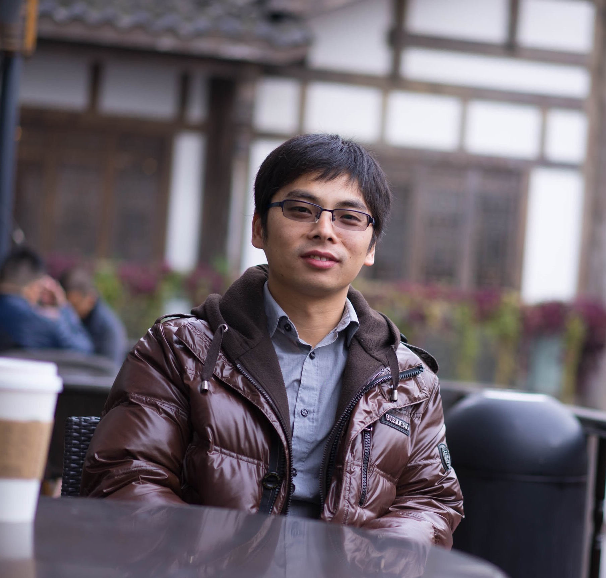

Welcome to Allan's Homepage [養天地正氣，法古今完人]
|
 |
Zhengming (Allan) Ding, 丁正明
Dr. and Assistant Professor
Department of Computer, Information and Technology
Indiana University-Purdue University Indianapolis
420 University Blvd Indianapolis, IN 46202
Email: allanzmding[at]gmail[dot]com
|
I will join Department of Computer, Information and Technology, Indiana University – Purdue University Indianapolis (IUPUI) as a Tenure-Track Assistant Professor in August 2018. My research interests include: transfer learning/domain adaptation, deep learning, and multi-view learning.
I received my Ph.D. degree from Department of Electrical and Computer Engineering, at Northeastern University in 2018, advised by a great supervisor Yun Raymond Fu. I received the B.Eng. degree in information security and the M.Eng. degree in computer software and theory from University of Electronic Science and Technology of China (UESTC), China, in 2010 and 2013, respectively. During my PhD study, I did three summer interns at Microsoft Research (with Yandong Guo and Lei Zhang), Adobe Systems Incorporated (with William Yan), Army Research Lab (with Nasser M. Nasrabadi), in 2017, 2016, 2015, respectively.
Opening Positions
I am always looking for self-motivated graduate students and visiting students/scholars. Feel free to contact me with your CV. Specifically, the Ph.D. students will receive the degree from Purdue University.
What is New!
[07/2018] We get one paper accepted by ECCV 2018 joint with three professors.
[07/2018] We get one full research paper accepted by ACM MM 2018. Congratulations to Kai, Kunpeng and Yulun.
[06/2018] We will organize a tutorial on Large-Scale Multi-View Learning in conjunction with IEEE Big Data 2018.
[06/2018] We get one paper accepted by IEEE Transactions on Image Processing (TIP) with Professor Nasser Nasrabadi and Professor Fu.
[05/2018] I will serve on the Senior Program Committee (SPC) for 33rd AAAI Conference on Artificial Intelligence (AAAI-19)
[05/2018] We get one paper accepted by IEEE Transactions on Image Processing (TIP). Congratulations to Shuang Li.
[05/2018] We get one paper accepted by IEEE Transactions on Knowledge and Data Engineering (TKDE). Congratulations to Hongfu, Ming Shao.
[04/2018] We get one Survey Track paper accepted by IJCAI 2018.
[04/2018] We get one paper accepted by IJCAI 2018. Congratulations to Lichen.
[03/2018] One book proposal (with Handong and Professor) is accepted by Springer.
[03/2018] I received the Chinese Government Award for Outstanding Self-Financed Students Abroad, 2017.
[02/2018] I accepted the invitation to serve as a member of the Program Committee for ICMLA-2018.
[01/2018] We have two FG 2018 papers accepted.
[12/2017] Our CVPR 2018 Tutorial Multi-view Data Analytics was accepted.
Tutorials
[T-3] Zhengming Ding, Ming Shao, Yun Fu. Large-Scale Multi-View Learning, IEEE International Conference on Big Data, 2018, Seattle, WA, USA
[T-2] Zhengming Ding, Ming Shao, Yun Fu. Multi-view Visual Data Analytics [Slides], IEEE International Conference on Computer Vision and Pattern Recognition, 2018, Salt Lake City, USA
[T-1] Zhengming Ding, Handong Zhao, Yun Fu. Multi-view Face Representation, IEEE International Conference
on Automatic Face and Gesture Recognition, 2017, Washington, DC
Selected Publications [Full Publication]
Journal (2 TNNLS, 1 TKDE, 8 TIP, 1 TCSVT, 1 TITS, etc.)
[J-6] Zhengming Ding, Nasser Nasrabadi, and Yun Fu. Semi-supervised Deep Domain Adaptation via Coupled Neural Networks,
IEEE Transactions on Image Processing (TIP), 2018(accepted). [pdf][bib][code]
[J-5] Zhengming Ding, and Yun Fu. Deep Domain Generalization with Structured Low-Rank Constraint,
IEEE Transactions on Image Processing (TIP), vol. 27, no. 1, pp. 304-313, 2018. [pdf][bib][code]
[J-4] Zhengming Ding, and Yun Fu. Robust Multi-view Data Analysis through Collective Low-Rank Subspace.
IEEE Transactions on Neural Networks and Learning Systems (TNNLS), vol. 29, no. 5, pp. 1986-1997, 2018. [pdf][bib][code]
[J-3] Zhengming Ding, Ming Shao, and Yun Fu. Incomplete Multisource Transfer Learning. IEEE Transactions on Neural Networks and Learning Systems (TNNLS), vol. 29, no. 2, pp. 310-323, 2018. [pdf][bib][code]
[J-2] Zhengming Ding, and Yun Fu. Robust Transfer Metric Learning for Image Classification. IEEE Transactions
on Image Processing (TIP), vol. 26, no.2, pp. 660-670, 2017. [pdf][bib][code]
[J-1] Zhengming Ding, Ming Shao, and Yun Fu. Missing Modality Transfer Learning via Latent Low-Rank
Constraint. IEEE Transactions on Image Processing (TIP), vol. 24, no. 11, pp. 4322-4334, 2015. [pdf][bib][code]
Conference (1 CVPR, 1 ECCV, 9 AAAI, 5 IJCAI, 3 ACM MM, etc)
[C-10] Zhengming Ding, Sheng Li, Ming Shao and Yun Fu. Graph Adaptive Knowledge Transfer for Unsupervised Domain Adaptation. European Conference on Computer Vision (ECCV), 2018 [pdf]bib][code]
[C-9] Zhengming Ding, Ming Shao, and Yun Fu. Robust Multi-view Representation: A Unified Perspective from Multi-view Learning to Domain Adaption. International Joint Conference on Artificial Intelligence (IJCAI), 2018 (Survey Track). [pdf][bib]
[C-8] Zhengming Ding, Yandong Guo, Lei Zhang, Yun Fu. One-Shot Face Recognition via Generative Learning, IEEE Conference on Automatic Face and Gesture Recognition (FG), 2018. [pdf][bib][code]
[C-7] Zhengming Ding, Ming Shao and Yun Fu. Low-Rank Embedded Ensemble Semantic Dictionary for Zero-Shot Learning. IEEE Conference on Computer Vision and Pattern Recognition (CVPR), 2017. [pdf][bib][code]
[C-6] Zhengming Ding, Ming Shao and Yun Fu. Deep Robust Encoder through Locality Preserving Low-Rank Dictionary. European Conference on Computer Vision, (ECCV), 2016. [pdf][bib][code]
[C-5] Zhengming Ding, and Yun Fu. Robust Multi-view Subspace Learning through Dual Low-rank Decompositions. Thirtieth AAAI Conference on Artificial Intelligence (AAAI), 2016. [pdf][bib][code]
[C-4] Zhengming Ding, Ming Shao, and Yun Fu. Deep Low-rank Coding for Transfer Learning. International Joint Conference on Artificial Intelligence (IJCAI), 2015. [pdf][bib][code]
[C-3] Zhengming Ding, Sungjoo Suh, Jae-Joon Han, Changkyu Choi, and Yun Fu. Discriminative Low-Rank Metric Learning for Face Recognition. International Conference on Automatic Face and Gesture Recognition (FG), 2015. [pdf][bib][code]
[C-2] Zhengming Ding, Yun Fu. Low-Rank Common Subspace for Multi-View Learning. IEEE International
Conference on Data Mining (ICDM), 2014. [pdf][bib][code]
[C-1] Zhengming Ding, Ming Shao and Yun Fu. Latent Low-Rank Transfer Subspace Learning for Missing
Modality Recognition. Twenty-Eighth AAAI Conference on Artificial Intelligence (AAAI), 2014. [pdf][bib][code]